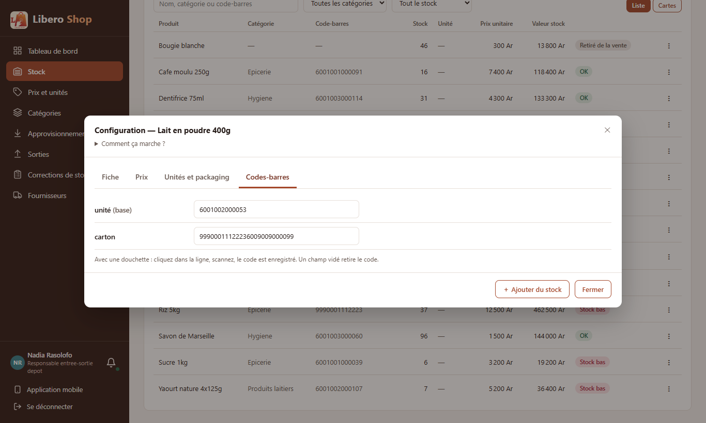
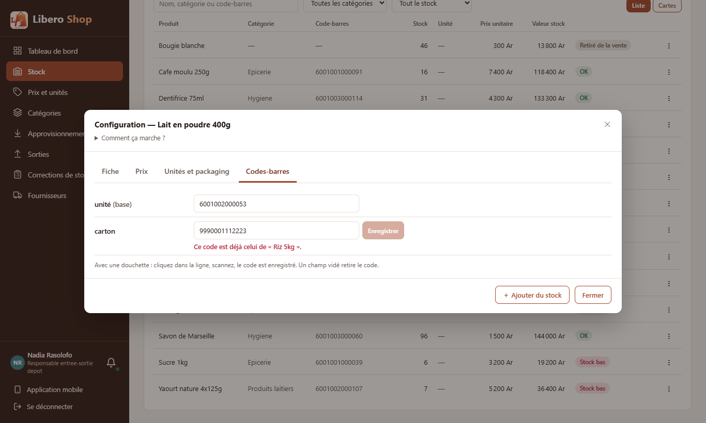
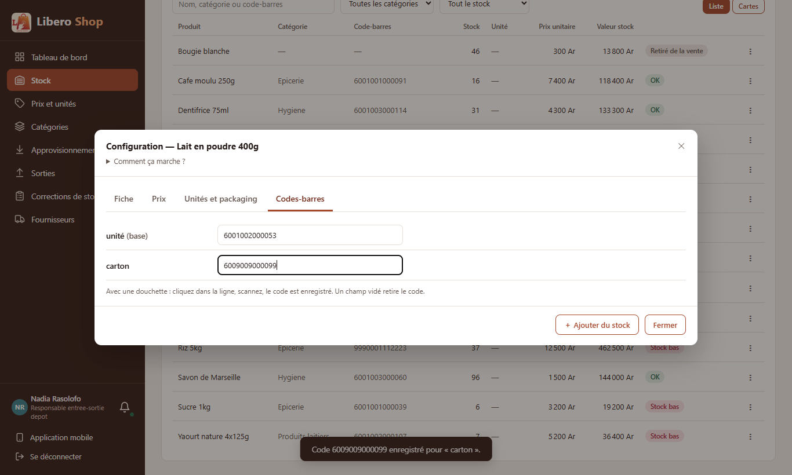

← Tous les comptes rendus de l'interface
UI-20Onglet Codes-barres : scanner pour associer
- L'onglet « Codes-barres » de la configuration montre une ligne par unité (pièce, paquet, carton…) avec son code.
- Avec une douchette : on clique dans la ligne, on scanne, le code est enregistré tout seul. Sur téléphone, un bouton 📷 lit le code.
- Un code déjà porté par un autre produit est signalé tout de suite, avec son nom ; il n'est pas envoyé.
- Le code existant d'une ligne est sélectionné quand on y entre : le code scanné le remplace au lieu de s'y ajouter.
- Chaque ligne s'enregistre seule : changer le code du carton ne touche à rien d'autre.
1. Le problème
Le code de l'unité de base se tapait dans la fiche ; celui d'un carton, dans le formulaire « Modifier » de l'unité. Un code déjà utilisé n'était découvert qu'à l'enregistrement, par un message d'erreur.
2. Ce qui a été fait
L'enregistrement réutilise ce qui avait été fait pour le code inconnu à la caisse (UI-21) : seul le code change, ni le prix, ni le prix d'achat, ni le contenu du carton. Le serveur refuse de toute façon un code déjà pris ; la vérification à l'écran évite seulement d'aller jusque-là.
3. Le résultat en images
Nadia — responsable de dépôt « Lait en poudre 400g », vendu à l'unité et au carton.



4. À éviter / attendu
5. Tableau récapitulatif
| Fichier | Changement |
|---|---|
ui/…/shared/components/barcodes-editor.component.ts | nouveau : une ligne par unité, scan, code déjà pris signalé |
ui/…/shared/components/product-units-dialog.component.ts | l'onglet Codes-barres utilise cet éditeur |
| Règle | Test |
|---|---|
| Une ligne par unité, la base d'abord, avec son code | barcodes-editor.component.spec.ts |
| Entrée (douchette) enregistre le code du carton seul | idem |
| Un code d'un autre produit est signalé et pas envoyé | idem |
| Le code est sélectionné à l'entrée dans la ligne | idem |
Tests : interface au vert (254 tests). Aucun changement côté serveur. Une unité garde un seul code : en garder plusieurs reste une décision attendue (liste de travail).